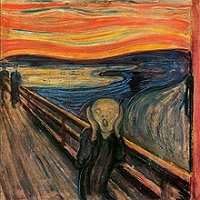

// import Bilza from "../00lib/Bilza_0_0_13.js";
import Bilza from "../../src/Bilza.js";
let bil = new Bilza("bilza",60,1000,500);
let img = bil.add.Image(0,300,"screamImage",50,50);
img.d.xAlignment = img.xAlignmentOptions.Mid;
img.d.yAlignment = img.yAlignmentOptions.Mid;
img.d.useDynResize = true;
img.d.dynWidthPercent = 30;
img.d.dynHeightPercent = 30;
//////////////////////////////////
bil.draw();
///////////////////////////////
let increase = true;
let inter = setInterval(function(){
if ( (increase == true) && (img.d.dynWidthPercent > 80) ){
increase = false;
}
if ( (increase == false) && (img.d.dynWidthPercent < 20) ){
increase = true;
}
///////////////////
if (increase == true){
img.d.dynWidthPercent += 1;
img.d.dynHeightPercent += 1;
}else {
img.d.dynWidthPercent -= 1;
img.d.dynHeightPercent -= 1;
}
bil.draw();
},50);